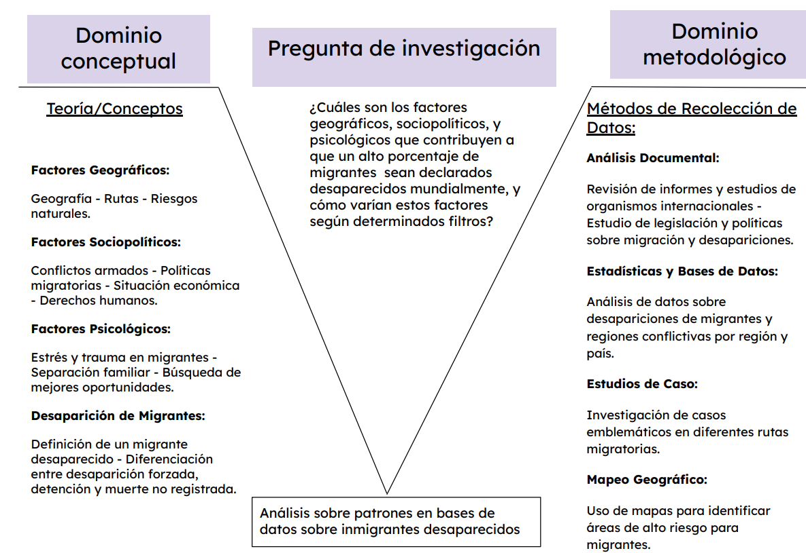

1 Bitácora 1
1.1 Comandos de git
1.1.1 Git Log


1.1.2 CHANGELOG
All notable changes to this project will be documented in this file.
\[unreleased\]
1.1.2.1 🚀 Features
- Add _quarto.yml
- Agrega el Quarto book
- Agrega bitacoras-1 a chapters
- Se agrega idea
- Se agrega conceptualización
- Agrega argumentación de pregunta 3
- Se agrega argumentación pregunta 4
- Agrega la introducción
- Añade pdf generado en docs
- Agrega más tensiones a bitacora
- Añade argumentación con datos
- Añade archivo Desarrollo_de_UVE.docx
- Añade archivo Fichas.docx
- Agrega referencias de conceptos
- Agrega info de .docs a .qmd
- Añade referencias faltantes
- Añade archivo 3parte2.docx
- Añade archivo 3parte3.docx
- Añade archivo 3parte1.docx
- Agrega info de .docx a .qmd
1.1.2.2 🐛 Bug Fixes
- Resolver conflicto en _quarto.yml y agregar UVE Heurística
- Resolver conflicto en _quarto.yml
1.1.2.3 📚 Documentation
- Elimina archivos .docs
- Elimina archivos .docx
1.1.2.4 ⚙️ Miscellaneous Tasks
- Modifica gitignore para incluir docs
- Add .quarto.yml configuration file
- Agrega archivo configuración de pre-commit
- Agrega link de repositorio y descarga pdf
- Implementa opciones edit y source
- Add .quarto.yml configuration file
- Update .quarto.yml with new settings
- Implementa opciones edit y source
- Actualiza el sitio web
- Add Pregunta_1.docx
- Add Pregunta_1.docx
- Add Pregunta_2.docx
- Actualiza sitio web
- Actualiza sitio web
- Actualiza sitio web
1.1.3 Git Summary
1.2 Planificación
1.2.1 Definición
Idea: Con este proyecto quisieramos no solo entender el fenómeno de los migrantes desaparecidos desde una perspectiva sociológica, sino también contribuir significativamente al ámbito social debido a que es esencial que se respeten y defiendan los derechos humanos. Para lograrlo, se plantea utilizar los datos recolectados por organizaciones que investigan el paradero de los migrantes, lo cual permitiría describir y entender mejor su estado de desaparecido. Además, se pretende identificar los países con más migrantes desaparecidos para ofrecer una visión más clara de los lugares donde el problema es más grave, en el contexto de personas que migran en busca de mejores oportunidades, pero no logran su objetivo.
Tensiones: Podrían existir casos sin resolver, incluso de años anteriores. El estado de desaparecido no proporciona tanta información, pues se desconoce el paradero de la persona, si ha fallecido y cuál podría haber sido la posible causa de su muerte o desaparición, además de la zona exacta donde desapareció. Además es posible que existan personas que no han sido reportadas como desaparecidas, lo cual evitaría reflejar la realidad el número de incidentes.
Por otro lado, dependiendo de cada país, se puede llevar un mejor o peor control sobre las investigaciones actuales, la calidad de la información de cada región es diferente y no todas proporcionan la información suficiente sobre cada caso.
1.2.2 Conceptualización
- Determinar
-
“Decidir algo, despejar la incertidumbre sobre ello” - Española (2024).
- Cálculos estadísticos
-
“Es la recopilación, análisis, interpretación y presentación de datos; lo que permite extraer conclusiones y hacer predicciones sobre fenómenos o procesos del mundo real” - OpenStax (2024).
- Migrante desaparecido
-
La Real Academia Española define la palabra “migrante” como: “que migra”. Derivando este de migrar, que significa: “trasladarse desde el lugar en que se habita a otro diferente”. Y por otro lado, “desaparecido” significa: dicho de una persona: Que se halla en paradero desconocido, sin que se sepa si vive. Con lo cual se conforma uno de los elementos claves de la investigación presente: el estudio de datos referentes a personas que se han traslado a un lugar diferente del que viven, pero con desconocimiento de su paradero. Se plantea por lo tanto una cuestión sociológica y estadística la cual se compone de un largo espectro de capas que se pretenden indagar y estudiar. Española (2024).
- Desaparición forzada
-
“Se considera desaparición forzada toda forma de arresto, detención, secuestro o cualquier otra modalidad de privación de libertad perpetrada por agentes del Estado o por personas o grupos de personas que actúan con la autorización, el apoyo o la aquiescencia del Estado, seguida de la negativa de las autoridades a reconocer la situación de privación de libertad o a revelar la suerte o el paradero de la persona interesada” - Oficina del Alto Comisionado de las Naciones Unidas para los Derechos Humanos (2024).
- Detención
-
“Constituye la detención una medida cautelar de naturaleza personal y provisionalísima, que puede adoptar la autoridad judicial, policía e incluso los particulares, consistente en la limitación del derecho a la libertad del imputado con el objeto esencial, bien de ponerlo a disposición de la autoridad judicial, bien, si se encuentra ya en dicha situación, de resolver sobre la misma, restableciendo dicho derecho o adoptando una medida cautelar menos interina.” - Derecho UNED (2024).
- Muerte no registrada
-
”Existen diferentes maneras de definir las muertes de personas migrantes. El Proyecto Migrantes Desaparecidos de la OIM, documenta las muertes y desapariciones de personas en el proceso de migración hacia un destino internacional. Esta definición es similar a la empleada por otras iniciativas, como la Deaths at the Borders Database (base de datos sobre las muertes registradas en las fronteras) en Europa, excepto que también incluye a los migrantes desaparecidos mientras atravesaban cuerpos de agua en su viaje. Se prefiere este enfoque porque las muertes que se producen en las fronteras físicas y durante el trayecto representan una categoría que es posible definir de forma más clara, y aporta información sobre los riesgos a los que se enfrentan las personas en las distintas rutas migratorias del mundo. Los cadáveres sin identificar que se encuentran en los cruces fronterizos o en las principales rutas migratorias pueden clasificarse como migrantes en función de sus pertenencias y de las características de sus muertes” - Migration Data Portal (2024).
1.3 Pregunta
Se reformula la idea en forma de preguntas, con el fin de encontrar ciertos argumentos que ayuden a resolverlas.
¿Qué patrones se detectan sobre los grupos de personas migrantes de todo el mundo cuando son declaradas desaparecidas?
¿Cuáles son los trasfondos geográficos, sociopolíticos y psicológicos que pueden determinar el destino de un porcentaje alto de migrantes se declare desaparecido?
¿Qué determina que un migrante se considere desaparecido?
¿Qué países son los que contienen el mayor porcentaje de migrantes desaparecidos por año?
1.3.1 Argumentación de la pregunta
Pregunta 1: ¿Qué patrones se detectan sobre los grupos de personas migrantes de todo el mundo cuando son declaradas desaparecidas?
Contraargumentos
Lógica: A partir de bases de datos es potencialmente complejo poder crear inferencias u estudios puesto que son solo números que no reflejan la realidad.
Ética: Las bases de datos contienen información delicada y sensible, esto es: desapariciones y muertes de personas. Así que un incorrecto estudio u orientación del tema podría no aportar sino más bien violentar la integridad de dichas personas o sus familiares.
Emocional: Las fuentes que potencialmente se estudiarían pueden estar sesgadas. Ya que el tema migratorio consiste en un área tan política, es muy probable que el proyecto contenga información falsa, contradictoria y tergiversada por entes gubernamentales, compañías, y agencias periodísticas.
Argumentos
Lógica: La complejidad del proyecto es un hecho, sin embargo, lo es también una representación académica, objetiva, y con el peso de investigación suficiente. No solo utilizando las bases de datos seleccionadas, sino también: libros, entrevistas, fuentes periodísticas de diversa índole, estudios similares y un autónomo juicio por parte de los autores; puede establecerse un proyecto altamente apegado a la realidad con patrones demostrables.
Ética: Se asume el hecho de que es un tema delicado, triste y oscuro. Sin embargo, con el único hecho de conocer, estudiar y analizar el tema, se tratará con el respeto y la seriedad necesarios; eventualmente creando un trabajo de referencia que pueda ser utilizado para paliar una de las problemáticas más graves del mundo.
Emocional: En definitiva, el presente trabajo no reflejará ingenuidad ni será aliado a ninguna autoridad política, social o económica. Por lo cual, mediante la utilización de los altos principios de investigación que representan a la Universidad de Costa Rica, se procurará tener una investigación respetable.
Concluya: El objetivo de crear un análisis integral sobre migrantes desaparecidos es un reto que involucrará un alto número de horas de trabajo; en este camino, se asume que se tratarán temas difíciles que requerirán la puesta en marcha de mecanismos académicos, de inteligencia, y valores humanos. Aunque el trabajo presenta una serie de desventajas, las ventajas las sobrepasan; ya que no solo se desea estudiar mecánicamente una área sociológica, sino que se planea crear un proyecto de investigación revolucionario en aras de contribuir social.
Pregunta 2: ¿Cuáles son los trasfondos geográficos, sociopolíticos y psicológicos que pueden determinar el destino de un porcentaje alto de migrantes se declare desaparecido?
Contraargumentos
Lógica: Evaluar trasfondos externos sobre un tema de investigación podría demorar mucho tiempo; a la misma vez, es inminente la posibilidad de desviarse de los objetivos del proyecto.
Ética: Incluir temas sociopolíticos podría implicar la parcialización del tema, u de otro modo, la no relevancia que se le podría asignar debido a lectores no interesados en esto.
Emocional: El hecho de que se involucre no las razones directas, si no que: estados mentales, situaciones sociales y gubernamentales; podría significar una invasión a la privacidad de personas que únicamente deseaban desplazarse de un lugar al que por diversos motivos no querían estar.
Argumentos
Lógica: El equipo de investigación tiene el tiempo suficiente para una profunda investigación sobre el tema planteado. Sería una falacia indicar que se desviaría del tema del trabajo involucrar temas geográficos, sociopolíticos y psicológicos, pues más bien estos son la base sobre la cual derivan los datos. Por ello, a través de una inteligente, sutil, razonable manera de estudio, se conjugarán esta serie de aspectos para enriquecer el presente trabajo.
Ética: Nunca se mencionarán en el trabajo identidades de personas; y se contarán con fuentes de confianza que traten los temas con responsabilidad social.
Emocional: Nunca se mencionarán en el trabajo identidades de personas; y se contarán con fuentes de confianza que traten los temas con responsabilidad social. En otras palabras, no se pretende en absoluto hacer una persecución a distintos grupos de personas, si no que exponer datos e información únicamente veraz que más bien ignoren los prejuicios que existen en el mundo hacia migrantes y ofrezca una perspectiva con exclusividad al problema.
Concluya: Las series de matices que presenta este trabajo de investigación son muy numerosas. Y aunque siempre, sin excepción, la manipulación y representación de temas sociales, políticos y de salud es delicada; sin estos es imposible completar un trabajo tan ambicioso. Por ello se reconoce la dificultad, y el juicio necesario que se necesitará. Además, ¿si se hace un trabajo incompleto, para qué hacerlo?
Pregunta 3: ¿Qué determina que un migrante se considere desaparecido?
Contraargumentos
Lógica: Es difícil precisar si una persona se encuentra desaparecida mientras migra, pues existe un periodo de tiempo extenso donde no se sabe nada de la persona, incluso si logra llegar a su destino existe la posibilidad de que no se comunique con nadie y continue con su vida.
Ética: La dificultad que presenta buscar y encontrar a las personas reportadas desaparecidas en lugares tan amplios y con poca población o incluso deshabitados genera poco margen de éxito, por lo que muchos de estos casos quedan inconclusos y etiquetados como “desaparecidos” (que como se mencionó antes, no aporta mucho al análisis).
Emocional: Debido a la gran cantidad de migrantes que existen y el tiempo que implica cada viaje hasta llegar al destino final, se dificulta la investigación de cada caso y tener éxito en su búsqueda, por lo que no se refleja la realidad sobre el estado de cada migrante, si se encuentra con vida, perdido o tuvo éxito migrando. Finalmente, ante la incertidumbre simplemente se clasifica como desaparición.
Argumentos
Lógica: Existen diferentes causas por las que las personas migran, pero se tiene el objetivo encontrarse en mejores condiciones de vida que en su actual residencia. Por lo tanto, se espera que luego de un tiempo la persona tenga éxito, o en caso contrario vuelva a su país de origen. Al no tener conocimiento pronto de la situación del migrante, se sospecha la desaparición de dicha persona. Al iniciar la investigación existen diferentes factores que indican el posible paradero de la persona desaparecida, ya sea que la ruta es peligrosa, existe demasiada seguridad fronteriza para pasar, que se diera un evento catastrófico cerca de la ruta, etc. Si al final de la investigación se encuentran sobrevivientes o, en caso de muerte, el cuerpo de la persona desaparecida, se concluye el caso. De otro modo se mantiene el estado de desaparición.
Ética: Existen diferentes artículos que hablan sobre la desaparición de migrantes, cómo realizan la investigación de cada una y cómo mejoran con el paso de los años. Además, se cuenta con una base de datos con casos a partir del 2014, con lo que se puede analizar la evolución de los casos hasta la actualidad.
Emoción: Debido a que la problemática tiene mayor relevancia actualmente, además de las familias preocupadas por el paradero de sus seres queridos, se cuenta con organizaciones que estudian los diferentes casos, donde se señalan las diferentes causas y aspectos que indican cuando un migrante se encuentra desaparecido, incluso en que situaciones es más probable que grupos de migrantes no tengan éxito en su viaje.
Concluya: La forma en cómo se determina el estado de desaparecido de una persona migrante depende directamente del tiempo que tome tener conocimiento acerca de su paradero donde se analiza la evolución de cada caso con las investigaciones de diferentes organizaciones y finalmente se logre explicar la situación en que se encuentran los migrantes a sus familias. Todo lo anterior permitiría tener una descripción del estado de desaparecido para tener un mayor entendimiento sobre lo que ocurre con las personas que no han confirmado su llegada a su lugar de destino.
Pregunta 4: ¿Qué países son los que contienen el mayor porcentaje de migrantes desaparecidos por año?
Contraargumentos
Lógica: Debido a la dificultad de tener la certeza de que un migrante se encuentra desaparecido, muerto o en buen estado durante su trayecto, no se puede asegurar que determinados países presentan un mayor número migrantes que el resto. Además, depende mucho de cómo cada país realiza sus investigaciones sobre migrantes desaparecidos, pues los métodos son distintos al igual que la eficacia al realizar las búsquedas.
Ética: Se recolectan datos de diferentes fuentes, por lo que la calidad de la información puede variar demasiado. También se depende mucho de las instituciones de los países donde ocurren las desapariciones, por lo que la información obtenida está ligada a lo que dichas instituciones desean revelar.
Emoción: Se trata de una gran cantidad de casos de los cuales muchos no han concluido hoy en día, además de que otros no se actualizan con el paso de los años, por lo que no se podría representar la realidad sobre los diferentes países.
Argumentos
Lógica: Se tiene información del lugar de origen de donde parten los migrantes, hacia donde se dirigían, rutas que tomarían para llegar e incluso coordenadas de donde se encontraron en caso sobrevivencia o muerte. De esta forma se puede analizar de qué países provienen la mayor cantidad de desaparecidos al migrar e incluso cuáles son los países que son normalmente el destino de los migrantes.
Ética: Se tiene diversas fuentes que contienen toda la información antes mencionada, incluso con causa de muerte (si fuera el caso) o en algunos casos el motivo de la desaparición. Además, los datos para el análisis de este proyecto se recolectaron desde el 2014, lo que sirve para determinar patrones sobre qué países resaltan en diferentes aspectos durante los últimos 10 años.
Emoción: Es importante reconocer qué países presentan el mayor número de personas desaparecidas, para poder predecir casos futuros y que las instituciones responsables tomen las respectivas medidas para reducir dicho número. Se puede identificar países tanto que presenten el mayor número de emigrantes como de inmigrantes.
Concluya: Para determinar qué países tienen más migrantes desaparecidos por año se requiere de la recolección de información de diferentes instituciones que se enfocan en encontrar a dichos migrantes, que con los datos de los últimos años se puede representar la realidad sobre cuáles de estos países presentan un mayor problema de desaparecidos que implica un problema de personas que intentaron buscar mejores oportunidades sin éxitos.
1.3.2 Argumentación a través de datos
La investigación se basa en una base de datos que se encuentra en Kaggle acerca de migrantes desaparecidos a nivel mundial:
Fuente de información: Las bases de datos adquiridas, y que serán la fuente del proyecto para los respectivos procesos investigativos, provienen de la página web de Missing Migrants Project, una iniciativa que nació en el 2014 por la Organización Internacional de Migración (OIM). Esta iniciativa documenta muertes y desapariciones de personas que se encuentran en procesos de migración.
Contexto temporal y espacial de los datos: Desde 2014 hasta 2022, a nivel mundial.
Facilidad de obtener la información: Óptima.
Población de estudio: Migrantes desaparecidos a nivel mundial.
Muestra observada: Casos del 2014 al 2022.
Unidad estadística o individuos: Basado en más de 11.000 casos.
Descripción de las variables de la tabla: (Nocco 2014)
Main ID (chr): Identificador principal del incidente.
Incident ID (chr): Código único asignado a cada incidente registrado.
Region (chr): La región geográfica donde ocurrió el incidente.
Incident Date (date): Fecha estimada en que ocurrió el incidente. En los casos donde no se conoce la fecha exacta de muerte, se considera la fecha en que se encontraron los cuerpos, en caso de ser varios. Si se tratara de sobrevivientes, testigos o entrevistados se registra la fecha en que ocurrió la entrevista.
Year (int): Año en que ocurrió el incidente.
Reported Month (chr): Mes en que fue reportado el incidente.
Number Dead (int): El número total de personas confirmadas muertas en un incidente, es decir, el número de cuerpos recuperados. Si se presume que los migrantes han muerto, pero sus cuerpos no han sido encontrados entonces la entrada estará en blanco.
Minimum Estimated Number of Missing (int): Número mínimo estimado de personas desaparecidas. El número de desaparecidos se calcula restando el número de cuerpos recuperados y el número de supervivientes del número total de migrantes que fueron reportados desaparecidos. Este número puede ser reportado por los migrantes sobrevivientes o por testigos. Si no se denuncia la desaparición de personas, se deja en blanco.
Total Number of Dead and Missing (int): Total de fallecidos y desaparecidos sumados.
Number of Survivors (int): El número de migrantes que sobrevivieron al incidente, si se conoce. En caso contrario estará en blanco.
Number of Females (int): Número de mujeres consideradas muertas o desaparecidas en el incidente, si se conoce. En caso contrario estará en blanco.
Number of Males (int): Número de hombres considerados muertos o desaparecidos en el incidente, si se conoce. En caso contrario estará en blanco.
Number of Children (int): Número de niños considerados muertos o desaparecidos en el incidente, si se conoce. En caso contrario estará en blanco.
Cause of Death (chr): Es el conjunto de condiciones que dieron lugar a la muerte del migrante, es decir, las circunstancias del hecho que produjo la lesión mortal. Si se desconoce, se incluye el motivo siempre que sea posible.
Location of Death (chr): Ubicación del incidente donde ocurrió la muerte o donde los cuerpos fueron encontrados.
Information Source (chr): Fuente de la información relacionada con el incidente.
Coordinates (dbl): Coordenadas geográficas del lugar del incidente. Las coordenadas geográficas se estiman, ya que a menudo no se conocen ubicaciones precisas.
Migration Route (chr): Ruta migratoria utilizada por las personas involucradas.En caso de no conocerse estará en blanco.
URL (chr): Enlace web asociado al incidente para obtener más detalles.
UNSD Geographical Grouping (chr): Clasificación geográfica de acuerdo con la división de las Naciones Unidas.
Source Quality (int): Los incidentes se clasifican en una escala del 1 al 5 según las fuentes de información disponibles. Los incidentes clasificados como nivel 1 se basan en información de una sola fuente. Los incidentes clasificados como nivel 2 se basan en relatos de testigos presenciales no corroborados o datos de encuestados. Los incidentes clasificados como nivel 3 se basan en información de múltiples reportes de medios, mientras que los incidentes de nivel 4 se basan en información de al menos una ONG, OIG u otra organización humanitaria con conocimiento directo del incidente. Los incidentes clasificados en el nivel 5 se basan en información de fuentes oficiales, como forenses, médicos forenses o funcionarios gubernamentales, O de múltiples organizaciones humanitarias.
1.3.2.1 UVE Heurística
Con base en lo descrito con anterioridad, haciendo uso de la pregunta de investigación, el objetivo general y los objetivos específicos, se construye esta UVE Heurística. Los elementos de este recurso se detallan adelante.

1.3.2.2 Conceptos Básicos
Fórmulas estadísticas:
- Medidas de Tendencia Central
-
Las medidas de centralización (o medidas de posición central) son métricas estadísticas que se encargan de mostrar el valor central distributivo. Por lo cual, se dedican a rastrear valores representativos del centro de un conjunto de datos. Las medidas a utilizar son:
Media: Es el promedio de todos los datos de la muestra.
Mediana: Es el valor del medio de todos los datos ordenados de menor a mayor.
Moda: Valor más repetido del conjunto de datos.
Desglosadas individualmente:
- Media
-
Para calcular la media se deben sumar todos los valores y luego dividir entre el número total de datos. La media también se conoce como media aritmética o promedio. Además, la media de una distribución estadística es equivalente a su esperanza matemática.
- Mediana
-
La mediana es el valor del medio de todos los datos ordenados de menor a mayor. Es decir, la mediana divide todo el conjunto de datos ordenados en dos partes iguales. El cálculo de la mediana depende de si el número total de datos es par o impar:
Si el número total de datos es impar, la mediana será el valor que está justo en el medio de los datos. Es decir, el valor que está en la posición (n+1)/2 de los datos ordenados.
Si el número total de datos es par, la mediana será la media de los dos datos que están en el centro. Esto es, la media aritmética de los valores que están en la posiciones n/2 y n/2+1 de los datos ordenados.
- Moda
-
La moda (o moda estadística o valor modal) es el valor del conjunto de datos que tiene una mayor frecuencia absoluta, esto es, el valor que más se repite de un conjunto de datos. Así que, para calcular la moda de un conjunto de datos estadísticos basta con contar el número de veces que aparece cada dato en la muestra. Se pueden distinguir tres tipos de modas según el número de valores que están más repetidos:
Moda unimodal: solo hay un valor con el máximo número de repeticiones. Por ejemplo, \[1, 4, 2, 4, 5, 3\].
Moda bimodal: el máximo número de repeticiones se produce en dos valores diferentes y ambos valores se repiten el mismo número de veces. Por ejemplo, \[2, 6, 7, 2, 3, 6, 9\].
Moda multimodal: tres o más valores tienen el mismo número máximo de repeticiones. Por ejemplo, \[3, 3, 4, 1, 3, 4, 2, 1, 4, 5, 2, 1\].
1.3.2.3 Teorías y Principios
Según David Dorrell (2024) los geógrafos han identificado tendencias generales en la migración global, también conocida como migración Norte-Sur, en la que la mayoría de los emigrantes provienen de países más pobres y en desarrollo, mientras que la mayoría de los destinos han sido tradicionalmente países más ricos y desarrollados. Para la mayoría de los estadounidenses y canadienses, este patrón es muy familiar, ya que en las últimas décadas se ha visto un número sin precedentes de latinos inmigrar a Estados Unidos en busca de empleos mejor remunerados y mejores oportunidades, además de escapar de la pobreza estructural en el mundo en desarrollo. De manera similar, los patrones recientes en Europa han mostrado un número récord de europeos del Este mudándose al oeste y norte para ganar salarios más altos que los disponibles en sus países de origen.
El cambio climático y el desplazamiento por desastres son las crisis definitorias de nuestro tiempo. Países enteros ya están sufriendo los impactos de emergencias relacionadas con el clima, pero las personas vulnerables que viven en las regiones más frágiles y pobres son las más afectadas de manera desproporcionada y se ven obligadas a moverse.
1.4 Parte de escritura
Pregunta seleccionada:* ¿Qué patrones se detectan sobre los grupos de personas migrantes de todo el mundo cuando con declaradas desaparecidas?
La escogencia de esta pregunta deriva del hecho que se determinó que la visión de los autores, así como una mezcla entre los demás problemas mencionados, como también, los lineamientos del curso en el que se enmarca este trabajo investigativo: Herramientas para Ciencia de Datos; corresponde de manera más precisa con la búsqueda y cálculo de patrones a los datos generados de tablas sobre la inmigración mundial.
Además, se considera que a raíz de la colosal cantidad de material que abunda tanto en internet, como en libros y/o revistas, y siendo estos en su mayoría dedicas a la exposición de hechos así como de datos numéricos directos que apelan al raciocinio del lector: se establece que un propio esquema con perspectivas imparciales, académicas y científicas, que son las que ofrecerán los autores, será lo más conveniente y prudente para contribuir a plenitud con la sociedad e investigación en sí.
Argumentación
Este proyecto pretende con la pregunta: “¿Qué patrones se detectan sobre los grupos de personas migrantes de todo el mundo cuando son declaradas desaparecidas?” crear un marco integral académico e investigativo que exponga de manera concisa y veraz información relevante e imparcial, con una serie de indagaciones derivadas de cálculos estadísticos, así como también, ofrecer un respaldo teórico apoyado en una larga lista de fuentes de índole: periodísticas, gubernamentales, no gubernamentales, científicas, médicas, entre otras; todo ello con en relación absoluta y directa al fenómeno de migración mundial. [Migration Policy Institute (2018); MinneapolisFed]
Cuando se mencionan las palabras: indagaciones, reportes, conclusiones; o específicamente: patrones, se hace alusión a los resultados que implicarán el proceso investigativo presente. Entre estos patrones, se espera: crear mapas geográficos que señalen destinos, rutas, coordenadas que presenten mayor riesgo para las personas inmigrantes; enumerar una serie de cálculos estadísticos que mencione datos como: media, moda, mediana, coeficiente de Pearson, entre otros; derivados únicamente de las bases de datos escogidas como fuentes directas de la investigación.
Resumen
El trazo que abarca la investigación actualmente consiste en una larga, diversa, y fructífera colección de información que tiene matices desde áreas como la economía, estadística y matemáticas, hasta temáticas meramente sociales como: sociología y política, e incluso médicas como la psiquiatría y psicología. Mediante un análisis y discusión dados sobre la visión del proyecto, lineamientos que deben seguirse, y motivaciones por parte de los autores, se ha construido una sólida base informativa con la que se harán respectivos cálculos e inferencias que puedan responder las preguntas planteadas del proyecto. Por ello, la enorme gama de material recolectada serán los cimientos del proyecto.
A través del estudio de distintas fuentes periodísticas, se ha concluido que el fenómeno de migración es tan delicado y lleno de matices, que el presente trabajo podrá apoyarse de un vasto número de similares proyectos que comparten las inquietudes que en trabajo se exponen.
Por otro lado, aspectos mencionados en este trabajo como: relación de la geografía e inmigrantes, conexión entre personas inmigrantes y aspectos psicológicos, o las influencias de la sociopolítica en los procesos migratorios, son ampliamente discutidos por muchas organizaciones que pretenden contribuir a mejorar un fenómeno que tristemente ha tomado tintes de problemáticas por lo que arraiga ser una persona inmigrante. Gracias a estos descubrimientos, se determina que el trabajo es completamente viable, y se le puede dar mejor forma tomando caminos distintos a los ya tomados por otros autores.
Así como también, estos trabajos investigativos que se asemejan a la visión del presente proyecto, serán totalmente respetados, y a partir de ellos, se restructurará y dará forma al trabajo de manera que se note el crecimiento didáctico generado por el intercambio y la enseñanza adquirida.
1.5 Referencias
1.5.1 Fichas bibliográficas
Con motivo de esclarecer cuál es la bibliografía por utilizar para la construcción de este trabajo investigativo, se muestran a continuación algunos de los recursos:
Título: The causes and consequences of the missing immigrants. (Minneapolis 2023)
Autora: Lisa Camner McKay
Nombre del tema: Implicaciones de la desaparición de inmigrantes.
Forma de organizarlo:
Cronológico: Artículo publicado el 17 de abril del 2023.
Metodológico: La autora utiliza un estilo informativo, de opinión y de fondo.
Temático: Se trata esencialmente de un texto meramente informativo con respaldo científico.
Teórico: El articulo intenta discutir la importancia del decaimiento de la inmigración en los últimos años. Por ejemplo, este fenómeno ha tenido implicaciones en el sector de trabajo, específicamente el área de agricultura que es la que suele tener más representación de extranjeros. Además, la autora enfatiza el impacto económico que esto provoca y qué debería hacer el gobierno para cambiar la situación.
Resumen de una oración: Menos inmigrantes, menos trabajos ocupados.
Argumento central: De aproximadamente 2 millones de inmigrantes desaparecidos, 1 200 000 hubiese ocupado plazas en la fuerza de trabajo. Esto ha debilitado el saludable funcionamiento de la Economía de Estados Unidos.
Problemas con el argumento: Posible sesgo político.
Resumen de un párrafo: El congreso legislativo estadounidense no ha estado activo en lo que políticas de inmigración se refiere. En cambio, es el poder ejecutivo el que estado dándole más forma a esta área social; el problema radica en que quien está en la presidencia posee un gran número de limitaciones; generando así un incierto acerca de la política de inmigración.
Título: Psychology of Immigration 101. (Association 2024)
Autores: American Psychological Association.
Nombre del tema: Aspectos psicológicos de la inmigración.
Forma de organizarlo:
Cronológico: Artículo proveniente del 2012.
Metodológico: Al igual que el texto anterior, el artículo está conformado con un estilo informativo.
Temático: Consiste en una indagación periodística, científica y médica.
Teórico: Los autores han desarrollado un trabajo repleto de información y diversas herramientas para profesionales de la salud mental, educadores, defensores, proveedores de servicios y miembros del público sobre las necesidades de salud mental de los inmigrantes en los Estados Unidos. Este texto al abordar una faceta médica en cuanto al problema de la inmigración, contribuye a facilitar con información veraz a describir situaciones sociopolíticas y económicas que envuelven a personas inmigrantes.
Resumen de una oración: La inmigración, contrariamente a como creen muchos, no se encuentra en aumento, más bien en disminución.
Argumento central: La inmigración día a día disminuye y disminuye, creando así un efecto negativo en economía de los países.
Problemas con el argumento: No se tienen.
Resumen de un párrafo: El bienestar de las personas inmigrantes se encuentra constantemente en deterioro, esto porque la xenofobia, discriminación y racismo están plenamente arraigados en el mundo, lo cual influye de manera sumamente negativa en la mente estas personas en estado de vulnerabilidad.
Título: Inmigration Data Matters. (Migration Policy Institute 2018)
Autores: Jeanne Batalova, Andriy Shymonyak and Michelle Mittelstadt.
Nombre del tema: Importancia de los datos migratorios para modelar y formar correctas políticas.
Forma de organizarlo:
Cronológico: Publicado en Marzo del 2018.
Metodológico: Se trato de un trabajo investigativo altamente diverso, con fases exploratorias, descriptivas y correlacionales.
Temático: Trabajo de investigación que resalta la aplicación de los datos en distintos entornos políticos.
Teórico: Este texto investigativo contiene una abundante muestra de fuentes, bases de datos y artículos periodísticos que engloban, definen y citan la inmigración mundial.
Resumen de una oración: Exposición de una cita que revela las características de inmigrantes, refugiados y otros. Como origen y destino al cual se dirigen.
Argumento central: Datos que pretenden encapsular estadísticas de migración mundial.
Problemas con el argumento: Ninguno.
Resumen de un párrafo: Bases de datos nacionales y reportes de países que son parte de la Unión Europea, que muestra datos de: detención, condiciones y protección.
Título: Introduction to Human Geography. (David Dorrell 2024)
Autores: David Dorrell, Georgeta Connor, Joseph Henderson, Todd Lindley, Adam Dohrenwend, Juana Ibáñez, Molly McGraw, Alan Ciba, Neusa Hidalgo Monroy Wohlgemuth, Rusti Liner.
Nombre del tema: “Migration”.
Forma de organizarlo:
Cronológico: Artículo publicado el 1 de enero de 2024.
Metodológico: Los autores utilizaron un estilo informativo y argumentativo, basado en 20 fuentes diferentes.
Temático: Se trata esencialmente de un texto meramente informativo con respaldo científico.
Teórico: El capítulo explica la geografía humana para entender patrones geográficos de migración.
Resumen de una oración: Patrones geográficos de migración influenciados por factores económicos, políticos, ambientales y socio-culturales.
Argumento central: Describe el fenómeno de la migración, junto con sus principales causas y consecuencias tanto para los migrantes como sus países de origen o de destino.
Problemas con el argumento: Dependencia de fuentes gubernamentales y sesgo político en la recolección de datos.
Resumen de un párrafo: Existen tendencias generales en la migración global, donde factores como la economía influyen enormemente en este fenómeno. Se describe la migración Norte-Sur, que se refiere a los casos relacionados entre Canadá y USA con Latinoamérica en general, donde por causa de la pobreza se presenta la necesidad de moverse a países más desarrollados. También se da una breve explicación sobre la influencia de fenómenos como el cambio climático y los desastres naturales, donde cada vez toman mayor importancia.
Título: Introducción a la Estadística. (Zabala 2007)
Autor: Martín Andonegui Zabala.
Nombre del tema: “Las medidas de tendencia central”
Forma de organizarlo:
Cronológico: Artículo publicado en junio de 2007.
Metodológico: El texto logra explicar aspectos estadísticos mediante descripciones, métodos cuantitativos y algunas aplicaciones.
Temático: Estadística básica.
Teórico: Abarca diferentes métodos estadísticos con variables tanto cualitativas como cuantitativas.
Resumen de una oración: Se busca encontrar datos especiales derivados de los datos recolectados.
Argumento central: Describe conceptos y teoría básica sobre estadística, con un enfoque educacional con el objetivo de formar una buena base.
Problemas con el argumento: No encontrados
Resumen de un párrafo: Se encuentra diferentes tipos de información en todos lados, por lo que es importante saber interpretarla, reconocer que datos son más relevantes que otros al analizar sus características (ya sean cualitativos o cuantitativos) y determinar si se puede concluir algo a cerca de ellos. Por lo que existe la estadística, que trata sobre cómo manejar dichos datos utilizando diferentes métodos.
Título: La Correlación de Pearson y el proceso de regresión por el Método de Mínimos Cuadrados. (Fiallos 2021)
Autor: Germán Fiallos.
Nombre del tema: “La Correlación de Pearson”.
Forma de organizarlo:
Cronológico: Artículo publicado el 1 de junio de 2021.
Metodológico: El texto comparte métodos cuantitativos para el análisis de los gráficos de dispersión y la relación que existe entre las dos variables.
Temático: Estadística.
Teórico: Procesos matemáticos sobre el análisis de correlación entre 2 variables.
Resumen de una oración: Explica la interdisciplinariedad que existe entre las regresiones y correlaciones con las ecuaciones lineales.
Argumento central: Se estudia el diagrama de dispersión y el coeficiente de correlación de Pearson, junto con sus características y sus diferentes tipos.
Problemas con el argumento: No encontrados.
Resumen de un párrafo: El coeficiente de correlación de Pearson nos indica cómo están correlacionadas dos variables, en primer lugar, si existe dicha correlación, si es directa o indirecta (índice negativo o positivo) donde la directa significa que el incremento de una variable implica el incremento de la otra y la indirecta que el incremento de una variable implica la reducción de la otra. Además, se puede analizar la intensidad con que están correlacionadas estas variables.
Título: Determinar. (Española 2024)
Autor: Real Academia Española.
Nombre del tema: “Definición de determinar”
Forma de organizarlo:
Cronológico: Definición actualiza al 2023.
Metodológico: El texto es del tipo descriptivo, utilizando la vigesimotercera edición del diccionario de la lengua española.
Temático: Lingüística.
Teórico: Definición, composición y sinónimos de la palabra “determinar”.
Resumen de una oración: La palabra determinar es decidir algo, despejar la incertidumbre sobre ello.
Argumento central: Describe y explica que es determinar junto con algunos ejemplos y sus conjugados.
Problemas con el argumento: No encontrados.
Resumen de un párrafo: Determinar se refiere a establecer o definir algo de forma precisa, implica tener seguridad sobre una situación, condición o cantidad. La determinación se requiere para poder tomar decisiones y lograr llegar a una conclusión sobre lo que se habla. Se utiliza mucho en contextos donde se den lugar evaluaciones o decisiones fundamentadas. Algunos de sus sinónimos son decidir, resolver, concluir, acordar, etc.
Título: Missing Migrants Project. (Nocco 2014)
Autor: Stefano Nocco.
Nombre del tema: “Datos sobre migrantes desaparecidos”.
Forma de organizarlo:
Cronológico: Artículo actualizado al 2022.
Metodológico: El texto utiliza datos recolectados de la Internacional Organization for Migration (IOM).
Temático: Datasets.
Teórico: Base de datos recolectados del 2014 al 2022 sobre casos de migrantes desaparecidos, donde se encuentran número de sobrevivientes, muertes o aún desaparecidos.
Resumen de una oración: El proyecto de “Missing Migrants” resalta el problema mencionado con datos recolectados en 8 años.
Argumento central: Se presenta una gran cantidad de casos de desapariciones para su estudio, con el fin de divulgar y generar conciencia sobre la problemática.
Problemas con el argumento: Depende de fuentes gubernamentales o algunos datos no cuentan con más de una fuente.
Resumen de un párrafo: Expone los diferentes casos de migrantes desaparecidos incluyendo ubicación geográfica, fecha en la que ocurrió el incidente, ruta que seguían los migrantes para llegar al lugar de destino, género de las víctimas, si hubieron niños involucrados, etc. En cada caso se tiene el número de sobrevivientes, muertes o personas aún desaparecidas. Con los datos se puede identificar que países presentar en mayor medida el problema, ya se por tener muchos inmigrantes o emigrantes.
Título: Migrant deaths and disappearances. (Migration Data Portal 2024)
Autores: Desconocido.
Nombre del tema: Muertes y desapariciones de migrantes.
Forma de organizarlo:
Cronológico: Artículo actualizado el 02 de abril del 2024.
Metodológico: Artículo de investigación altamente diverso, con fases exploratorias, descriptivas y correlacionales.
Temático: Consiste en una indagación periodística y estadística.
Teórico: El artículo hace menciones de cuántos inmigrantes han muerte desde ciertos periodos de tiempos, así como también expone cuántos han desaparecido. Para ello, se apoya no solo de su propias fuentes, sino que cita organizaciones que se están estudiando en este proyecto como Missing Migrants Project y Deaths at the Border Database.
Resumen de una oración: El Proyecto Migrantes Desaparecidos de la Organización Internacional para las Migraciones (IOM) documenta muertes y desapariciones de personas en el proceso de migración hacia un destino. Esta definición se asemeja a la de Base de Datos de Muertes en las Fronteras en Europa, con la diferencia de que también incluye a los migrantes que han desaparecido mientras cruzaban cuerpos de agua en su viaje.
Argumento central: Exposición de datos y fuentes relacionado a la desaparición y muerte de migrantes.
Problemas con el argumento: Ninguno.
Resumen de un párrafo: Recopilación de datos a nivel mundial: El Proyecto Migrantes Desaparecidos de la OIM es la única base de datos que recopila datos sobre muertes de migrantes. Las fuentes de datos que se emplean varían según la disponibilidad en cada región. Por ejemplo, en la región del Mediterráneo, el personal local de la OIM transmite datos cuando asiste a los sobrevivientes en los puntos de desembarco en Libia. En la frontera entre Estados Unidos y México, los datos se compilan en base a datos de los médicos forenses y las oficinas de los alguaciles de los condados de Estados Unidos, las agencias de búsqueda y rescate (SAR) mexicanas y fuentes de los medios de comunicación. En la Encuesta sobre la travesía del desierto del Sahara, se incluyen datos de la Matriz de Seguimiento de Desplazamientos (DTM) de la OIM. Las estimaciones en otras regiones se basan en una combinación de fuentes oficiales, datos de la OIM y otros organismos de las Naciones Unidas, datos de organizaciones de la sociedad civil y, principalmente, informes de los medios de comunicación.
Título: Protection of migrants from enforced disappearance: A human rights perspective. (Bernard Duhaime 2018)
Autores: Bernard Duhaime and Andréanne Thibault.
Nombre del tema: Protección de migrantes de desapariciones forzadas.
Forma de organizarlo:
Cronológico: Investigación de agosto del 2017.
Metodológico: Conjunto de análisis cualitativos, cualitativos y descriptivos.
Temático: Investigación científica, sociológica y estadística.
Teórico: El artículo aborda el tema de las desapariciones forzadas de migrantes durante su viaje migratorio o una vez que han llegado a su destino. Además, se examinan las causas y consecuencias de estas desapariciones, así como las obligaciones de los Estados y otros actores en la protección de los migrantes. También se discuten las medidas jurídicas y prácticas que se pueden implementar para prevenir y responder a las desapariciones forzadas de migrantes.
Resumen de una oración: Es evidente que los migrantes están generalmente expuestos a situaciones que aumentan su vulnerabilidad. A menudo huyen de conflictos armados de la violencia y sufren dificultades socioeconómicas y con frecuencia son víctimas de discriminación.
Argumento central: Causas, consecuencias y otros factores en la migración. Problemas con el argumento: Ninguno.
Resumen de un párrafo: A veces, los agentes del Estado pueden ser ellos mismos contrabandistas o traficantes, organizando el tráfico o trata de migrantes, facilitando la migración indocumentada o posibilitando la estancia de migrantes irregulares. En otras ocasiones, participan indirectamente en actividades de tráfico y trata de migrantes llevadas a cabo por actores privados, facilitando operaciones, permitiendo la entrada de migrantes indocumentados, proporcionando documentos fraudulentos o simplemente haciendo la vista gorda. Las actividades de tráfico y trata de migrantes a menudo se llevan a cabo con la participación o colaboración de funcionarios estatales corruptos, y la corrupción y la colusión son generalmente una parte crítica de dichas operaciones.
Título: A decade of documenting more than 63,000 migrant deaths shows that fleeing is more lethal than ever. (Renata Brito 2024)
Autores: Renata Brito and Kerstin Sopke.
Nombre del tema: Documentación de más de 63 000 muertes de inmigrantes muestra lo letal que emigrar.
Forma de organizarlo:
Cronológico: Actualizado el 26 de marzo del 2024.
Metodológico: Análisis descriptivo, exploratorio y cualitativo.
Temático: Investigación periodística, sociológica y estadística.
Teórico: Este artículo consiste en una explicación histórica y actual de las muertes de inmigrantes en todo el mundo. Por otro lado, el texto hace énfasis en la falta de legislación para proteger a las personas que están en estos procesos, así como también menciona los efectos psicológicos que provoca esta problemática en las personas.
Resumen de una oración: Casi el 60% de las muertes registradas por la OIM en la última década estuvieron relacionadas con ahogamientos. El mar Mediterráneo es el mayor foco de migrantes del mundo, con más de 28.000 muertes registradas en la última década.
Argumento central: Exposición de datos, consecuencias y críticas en cuanto al manejo de inmigración mundial.
Problemas con el argumento: Limitado conjunto de fuentes.
Resumen de un párrafo: Los guardacostas libios, formados y financiados por la UE, han sido vinculados con traficantes de personas que explotan a migrantes que son interceptados y devueltos a precarios centros de detención. Un grupo de expertos respaldado por la ONU ha concluido que los abusos cometidos contra los migrantes en el Mediterráneo y en Libia pueden constituir crímenes contra la humanidad.
Título: Claiming Time: Refugees and Asylum Seekers Dealing with the Production of Different Temporal Regimes by Asylum and Reception Policies. (Giuliana Sanò 2024)
Autores: Giuliana Sanò, Giulia Storato y Francesco Della Puppa.
Nombre del tema: Reclamando tiempo: refugiados y solicitantes de asilo frente a la producción de diferentes regímenes temporales a partir de las políticas de asilo y recepción.
Forma de organizarlo:
Cronológico: Publicado el 29 de junio del 2024.
Metodológico: Investigación aplicada, análisis descriptivo, exploratorio, cualitativo y cuantitativo.
Temático: Investigación científica, sociológica y periodística.
Teórico: El texto investiga el impacto de la temporalidad en la vida de los refugiados y solicitantes de asilo. También, explora cómo el tiempo y la espera afectan sus experiencias y la construcción de su identidad. Los autores también estudian cómo las políticas de fronteras y los regímenes de tiempo impuestos a los refugiados influyen en su proceso de asentamiento.
Resumen de una oración: Valdría la pena analizar más de cerca lo que Ramsay (2019) ha dicho sobre la precariedad, sugiriendo que no es una condición peculiar de los refugiados sino que está impuesta globalmente por los modos de producción capitalistas.
Argumento central: Análisis psicológico, economista y sociológico sobre la inmigración.
Problemas con el argumento: Ninguno.
Resumen de un párrafo: Más recientemente, Kirstoglou y Simpson han hecho una contribución significativa a los estudios antropológicos sobre el tiempo y el llamado “giro temporal” a través del uso del término cronocracia. De manera similar al enfoque de Fabian, no describen los términos de la relación entre el tiempo y el poder como resultado de relaciones de producción particulares, como las del tiempo de fábrica (Barber & Lem, 2018), sino que se refieren de manera más general al acto de temporalización, que no es un proceso neutral: “Los actos de temporalización también pueden ser representaciones violentas de la cronocracia en la medida en que varios regímenes discursivos y prácticos pueden producir diversas temporalidades y diferentes líneas temporales sociales y simbólicas que niegan la coetaneidad a ciertos sujetos” (Kirstoglou & Simpson, 2020: 7). Desde esta perspectiva, “reivindicar el tiempo” significa cuestionar aquellos análisis que a pesar de las enseñanzas de Fabian, todavía recurren a la representación de sujetos cuyas trayectorias de vida se distinguirían de otras porque siempre están en proceso de sincronización. Desde un punto de vista conceptual, no es la idea de sincronización la que nos desorienta o nos escandaliza, sino más bien la forma en que se despliega en tales contextos, particularmente en contextos de migración.
Título: More than 50,000 migrants ‘die in search of a better life’. (Nations 2022)
Autores: United Nations.
Nombre del tema: Más de 50.000 migrantes “mueren en busca de una vida mejor”
Forma de organizarlo:
Cronológico: Publicado el 23 de noviembre de 2022.
Metodológico: Análisis descriptivo, exploratorio, cualitativo y cuantitativo.
Temático: Investigación periodística.
Teórico: El artículo se encarga de criticar la grave problemática que es la muerte en la emigración, así como también, demanda que organismos gubernamentales opten por medidas para proteger personas que se ven afectadas por esto.
Resumen de una oración: Los niños representan más del 11 por ciento de las vidas perdidas en las rutas migratorias en Asia, la proporción más alta de cualquier región”, según el informe.
Argumento central: Exposición de problemas, testimonios y críticas.
Problemas con el argumento: Ninguno.
Resumen de un párrafo: Más de la mitad de las 50.000 muertes individuales documentadas ocurrieron en rutas hacia y dentro de Europa, y las rutas mediterráneas se cobraron al menos 25.104 vidas. Las rutas europeas también representan el mayor número y la mayor proporción de migrantes desaparecidos o presuntamente muertos, con al menos 16.032 desaparecidos en el mar y cuyos restos nunca se han recuperado. África es la segunda región más mortal para las personas en movimiento, con más de 9.000 muertes relacionadas con la migración documentadas desde 2014. Las encuestas regionales de hogares indican que estas cifras son casi con certeza muy inferiores a las reales.
Título: Act now to save lives and prevent migrants from going missing. (Organization 2022)
Autores: World Health Organization.
Nombre del tema: Actúe ahora para salvar vidas y evitar que los migrantes desaparezcan.
Forma de organizarlo:
Cronológico: Artículo publicado el 07 de marzo del 2022.
Metodológico: Análisis descriptivo y exploratorio.
Temático: Consiste en un artículo periodístico y sociológico.
Teórico: El texto es un llamado a la concientización para proteger a las personas inmigrates, además de que sugerir consejos y/o soluciones para paliar los riesgos y peligros.
Resumen de una oración: Garantizar el acceso a la justicia, la rendición de cuentas y la reparación a los migrantes y sus familias mediante la realización de investigaciones independientes (…).
Argumento central: Alertar sobre las consecuencias y/o efectos de la emigración, así como también sugerir soluciones y consejos para enfrentarlos.
Problemas con el argumento: Ninguno.
Resumen de un párrafo: Si bien queda mucho por hacer, cada vez hay más práctica, conocimientos y orientación que pueden orientar los esfuerzos coordinados para hacer realidad los compromisos contraídos en virtud del derecho internacional y los objetivos del Pacto Mundial para la Migración. Los organismos internacionales, regionales y subregionales pueden desempeñar un papel importante para facilitar esos esfuerzos, junto con los agentes y las comunidades locales.
1.5.2 Bibliografía
Española (2024); OpenStax (2024); Ministerio del Interior (2024); Newtral (2023); Minneapolis (2023); Association (2024); Migration Policy Institute (2018); Desconocido (2024); Oficina del Alto Comisionado de las Naciones Unidas para los Derechos Humanos (2024); Derecho UNED (2024); Migration Data Portal (2024); David Dorrell (2024); Zabala (2007); Fiallos (2021); Nocco (2014); Bernard Duhaime (2018); Renata Brito (2024); Giuliana Sanò (2024); Nations (2022); Organization (2022); Saadeddin (2024); Gallego-Nicasio Moraleda (2018)